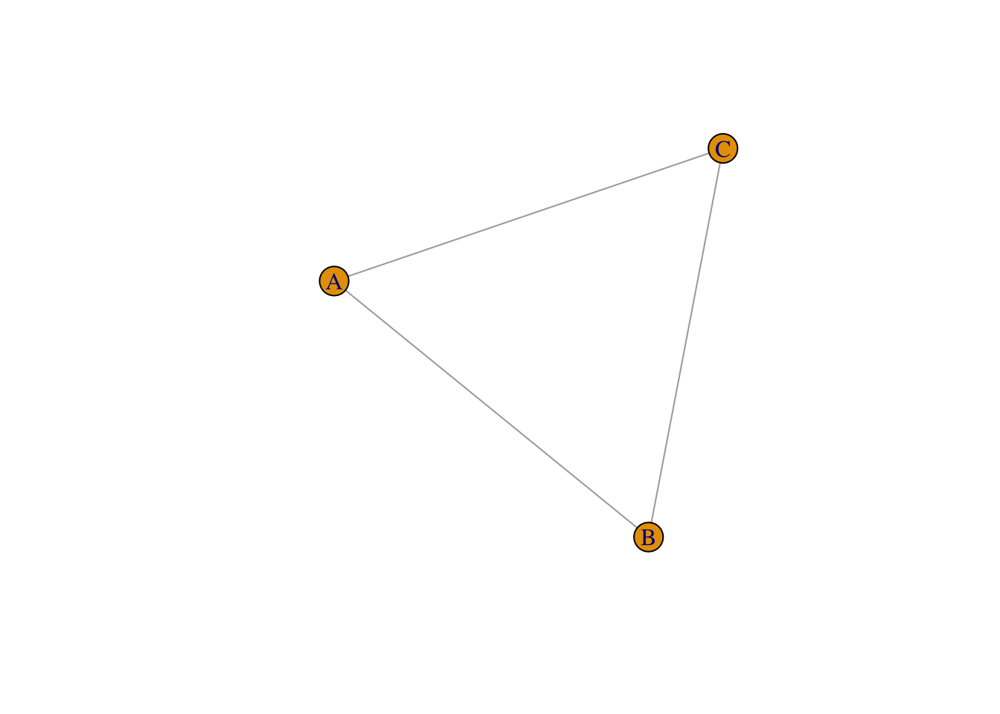

Graph theory and network analysis are often used interchangeably. Past literature may draw the line between graphs and networks by whether or not they “touch” real data. Others (e.g., Barnes & Harary, 1983) might suggest that graph theory is where improvements are made to the field and network analysis are where those theories go to die.
In this seminar, we will abide by the former set of arguments. Graphs will apply to the theoretical models we are working with and networks will be the models when applied to data.
Graph Theory
Graph theory is a field of mathematics which focuses on the pairwise relations between objects. The fundamental components of any graph are the vertices and links. In network analysis, we may be more familiar with the terminology: “nodes” and “edges”, respectively.
I do not care which you use.
Graphs–or networks–have been used extensively throughout history for simplifying the representation of complex systems into simpler problems. It is not necessarily the case that a graph should be an exact representation of a system. A link could be the amalgam of many interactions that lead to a net association between the vertices. The possibilities of graphs are endless because they are so genuinely simple.
In what follows, we will discuss a brief history of the theory of graphs and network analysis.
A Brief History
The history of graph theory is quite extensive. It’s difficult to pinpoint the exact origins of when people began connecting circles with lines and calling them things; however, the general consensus is that Euler’s solving of the “Bridges of Königsberg” problem in 1736 was the first formalism of graph theory.
Since then, graph theory and–by extension–network analysis has seen a dramatic rise in their implementation and development across various fields including [but not limited to]:
Mathematics
Statistical Physics
Biology
Computer Science
Sociology
Psychology
This course is designed around the formalisms of graph theory and its extensions into network interventions, attacks, and control. Likewise, we will discuss alternative forms and representations of networks that–to my knowledge–have not been sufficiently discussed in the field of psychology.
This means that the more recent work on “network theories in Psychology” a la regularized pairwise Markov random fields will not be a primary focus of the course; however, they will be covered to give everyone familiarity with the contemporary directions of psychological research.
My hope is that exposure to the broader field of graph theory and/or network analysis will encourage a greater deal of thought and scrutiny over applications of these techniques to data which may or may not be amenable to graph theoretical problems.
In this seminar, we are learning analytic techniques that may or may not align with our theories of the real world. Do not fall into the trap of thinking graphs apply to all possible questions. Graphs–like CFAs, SEMs, SSMs, or any other acronym–imply something about our real world. If those assumptions are not tenable, then the model is inappropriate.
To quote from Barnes & Harary (1983):
“The example given from psychology [of Factor Analysis] shows also how the growth of a social science can be distorted when its practioners become dominated not by empirical evidence but by a mathematical technique in which they assume a proprietary interest. Network analysts should be forewarned against this hazard.”
Some Illustrative Examples
Before we dive into defining a graph or network, we can talk about networks in the real-world. Surely, many of us have been exposed to networks whether we were aware of them at the time or not. For instance, this website is one of many websites that exist on the internet which is one of humanities greatest [or worst, your choice] creations. Likewise, the internet is fundamentally a network:
There, we can find vertices [websites] and links representing whether the website in question connects to another website. One might expect a website like Google to have a lot of “links” or connections while this website likely has very few–if any–connections.
Laniakeia in Hawaiian means, “Immeasurable Heaven” and is the name for our local galactic supercluster; the neighborhood of our Milky Way and billions of other was created by Tully et al., 2014 to represent the “flow” of galaxies towards or away some basic of attraction. Galaxies that ultimately shared the same main attractor where ultimately lumped into the same galactic neighborhood as us.
Likewise, very small things and systems can be treated as graphs. Work by Steinway et al., 2014 identified pathways which resulted in the activation of the Sonic Hedgehog (SHH) signaling pathway which is involved in tissue repair and directed cellular genesis. In their work, they constructed a Boolean network to model these interactions and found that SHH gets hijacked during the epithelial-to-mesenchymal transition (EMT) which contributes to cancer progression. Once hijacked, SHH drives the development of cancer by enabling cells to become more invasive and likely to spread.
Over the past decade, the use of graphs and networks has exploded in the psychological sciences. Much of my own research involves the intersection of networks and dynamical models. In one of my papers, we investigated how the strength of relations between psychological symptoms varied depending on the sampling interval.
All that said, graphs are incredibly broad representations of complex, real-world systems. Despite the fact that they may not represent the true mathematical model which may have generated our data, they are still powerful tools for understanding, modeling, and “controlling” real-world systems.
Defining a Graph
We begin our own journey in graph theory/network analysis by introducing the basic formalisms and mathematical notation of graphs.
This section may be among the most mathematically dense components of this entire seminar. If you have trouble following along, that is okay. Imagine today’s meeting as learning the language for graph theory.
As with any language, these things take time to settle and become familiar. My hope is that exposure to these specific terms early on will lead to a much easier time grasping difficult concepts later in the quarter.
Ask questions. Ask for examples. Begin discussion. These will help you and others in the course.
Let’s begin!
The most basic form of a graph–referred to as a simple undirected graph–is given by:
\[G = (V,E)\]
where:
\(G\): the graph is given by
\(V\), a set of vertices and
\(E \subseteq \{\{x, y\} \mid x, y \in V \text{ and } x \neq y\}\)
The notation of \(E\) may be a bit challenging for those without familiarity with mathematical notation. First, we’ll break down the notation and then verbalize the notation of \(E\):
\(\subseteq\): subset
\(\{\cdot_{1}, \cdot_{2}\}\): an unordered pair; a pair where the order of \(\cdot_{1}\) and \(\cdot_{2}\) does not matter
\(x, y \in V\): \(x\) and \(y\) “in the set of” \(V\)
\(x \neq y\): \(x\) cannot equal \(y\)
So, we verbalize the notation of \(E\) as:
\(E\) is a subset of all unordered pairs, \(\{x, y\}\) such that \(x\) and \(y\) are elements from the set of vertices, \(V\), and are not the same vertex (i.e., \(x \neq y\)).
Put another way, \(E\) is the subset of \(\{x,y\}\) pairs of vertices which are connected to one another. They are our links or edges.
It’s important to note that the way we define \(E\) has a strong effect on the types of graphs we will be able to generate and study.
Further, we can identify some limits to \(G\) just by looking at the expression of \(E\). Namely, in the number of total links that may exist in \(G\) given \(V\).
Reflection 1.
What are the limits imposed on \(E\) given \(V\)?
Let’s solve this by defining a graph comprised of 3 vertices and creating a table or a matrix; a term we will define formally in the following section.
Assume that forbidden links are set to \(0.00\) and allowable links are set to \(1.00\). Given that, which links would be set to \(1.00\)? Which would be \(0.00\)?
For the matrix, the elements are configured as follows:
\[
\underset{p\times p}{\mathbf{A}} =
\begin{bmatrix}
0 & a_{1} & a_{2} \\
a_{1} & 0 & a_{3} \\
a_{2} & a_{3} & 0
\end{bmatrix}
\] Note that the diagonal elements are 0 because \(x \neq y\) and “off-diagonal” elements are equal to one another. This is the matrix implied by the rules of an undirected simple graph.
The definition of \(E\) has several constraints:
First that: \(x \neq y\)
Second that: \(\{x,y\}\) are unordered pairs; meaning \(\{x,y\} = \{y,x\}\)
This means that vertices in \(G\) may not link to themselves and that 2 vertices may be connected to one other only once.
For our \(3\times 3\) table only 3 links can be drawn out of the \(3\times 3 = 9\) possible. We can simplify this to say that there are \(n\times n\) cells.
The diagonal part is one set of \(n\)
The parts above and below the diagonal are \(n\times (n - 1)\)
If we only want the lower cells, we can just divide by 2 and get: \(\frac{n\times(n-1)}{2}\).
To get our \(n\) for our graph, we need to know the total number of vertices which is given by \(|V|\) or the “cardinality” of \(V\). This is just a fancy way of expressing the size of the set.
Thus, we can derive the total number of possible links as:
\[|E|_{max} = \frac{|V|(|V|-1)}{2}\] where:
\(|\cdot|\) is the cadinality–or size–of \(\cdot\)
This means that the maximum cardinality–or size–of \(E\) is constrained by the cardinality of \(V\)
This is good to know as it sets a foundation for questions down the road and adjustments we may want to make to the definition of \(E\) to make it align better with our own theories.
Let’s move on to a simple visualization of a graph in the following section.
Visualization of an Undirected Graph
Here, we will define a graph, \(G\), which–as discussed above–is defined by \(V\) and \(E\). We will define \(G\) by:
\(V = \{A, B, C\}\)
\(E = \{\{A,B\}, \{B,C\}, \{A,C\}\}\)
This tells us that we have a graph with 3-vertices and 3-links.
This is equivalent to the following graph in \(\texttt{R}\):
# The "#" symbol is how you add comments into R code.# Add this before any text to avoid running it and running into errors# First, we'll install the igraph package if we haven't done so already# install.packages("igraph")# After installing a package, we have to "call it in" via the library() or require() functionslibrary(igraph)edges =c("A", "B", "B", "C", "A", "C")g =make_graph(edges = edges, directed =FALSE)plot(g)

As we discussed earlier, the definition of \(E\) forces an interpretation of the graph that may or may not be amenable to the types of graphs that you work with in your own work.
Reflection 2.
First, what complex systems do you think are appropriately modeled by non-directed connections with no self-loops? Try to play devil’s advocate even if you disagree.
Other than the link limit, what other constraints are imposed upon \(E\) that may not align with graphs we might encounter in real life?
For those who have seen or worked with networks before, what might be missing in the graph that might expect?
Answer.
Friendship networks could be defined as bidirectional; though, when two vertices [people] disagree then we may need more complex definitions of \(E\)
The classic co-authorship networks
Electrical grids and road networks
By contrast, many graphs we typically work with may:
Have well-defined bidirectional connections
Possess self-loops
Have weighted values for links between vertices
These discussions and thoughts might then push us to redefine \(E\) and identify alternative definitions which may better reflect our reality.
Extending Upon \(E\)
As discussed, the structure of the graph, \(G\), is affected quite strongly by the nature of \(E\). We may choose to adjust the definition of it to obtain networks that may better represent real-world systems.
For instance, we might adjust \(E\) to mean:
\[E \subseteq \{(\{x,y\},i) | x, y \in V, i \in \mathbb{N}\}\] Here, \(E\) is the set of edges where each edge is a tuple comprised of the unordered vertex pair \(\{x,y\}\) and \(i \in \mathbb{N}\). The index, \(i\), takes on any form from all of the natural numbers and distinguishes multiple multiple links connectin the same pair of vertices.
We can note several things from this new expression for \(E\). First, we have relaxed the self-loop restriction (i.e., \(x \neq y\)). This allows a vertex to connect to itself.
Second, we have added an identifier which represents the numbered link between a set of vertices.
Ultimately, this new definition of \(E\) changes our graph from an undirected simple graph to an undirected multigraph.
Given this new result, we may now observe the following connectivity pattern:
Here, we would have the edge list, \(E\), denoted as:
\(\{A, B, 1\}\)
\(\{B, C, 1\}\)
\(\{B, C, 2\}\)
\(\{B, C, 3\}\)
\(\{A, C, 1\}\)
\(\{A, A, 1\}\)
\(\{A, A, 2\}\)
This tells us that there are 2 \(A-A\) links and 3 \(B-C\) links.
Reflection 3.
Many of us have been exposed to networks previously even if we are not well-versed in their strict mathematical expression. Imagine that \(\{A, B, C\}\) are some real, tangible variables that you may be familiar with.
What could the links between \(\{A, B, C\}\) be representative of?
Examples.
\(\{A, B, C\}\) could be cities and their links, roads. Cities often have multiple ways to move from \(A\) to \(B\) thereby explaining the multiple links
Neurons have multiple ways of exerting influence from certain hubs to others. In the presence of brain damage, some amount of alternative avenues may be utilized by the brain to accomplish tasks
The Digraph
Often, we may envision the relations between variables we are interested in as being directional. For instance, we may know that there is a temporal precedence to the connectivity patterns among our vertices. Such as, \(\text{Caffeine Consumption } \rightarrow \text{ Wakefulness}\). In those instances, we may relax an additional components of \(E\) to derive the “digraph” or–simply–a [di]rected [graph].
To accomplish this, we revisit the equation for \(E\) in an undirected simple graph:
\[E \subseteq \{\{x, y\} \mid x, y \in V \text{ and } x \neq y\}\]
We already removed the restriction for no self-loops by eliminating \(x \neq y\) when moving to the multigraph. Likewise, instead of forcing an [un]ordered pair–denoted by \(\{\cdot\}\), we can allow for an ordered pair via \((\cdot)\):
\[E \subseteq \{(x, y) \mid x, y \in V\}\]
Now, \(x\rightarrow y \neq x \leftarrow y\). This doubles our set of possible links between vertices. If we also add back the self-loops, this means that the value of \(|E|_{max}\)–the theoretical cardinality of \(E\) is given by:
\[|E|_{max} = |V|^2\]
There we go! We’ve created an undirected simple graph, a multigraph, and a digraph. These are far from being the only graphs that we’ll cover in the remainder of this seminar but it serves as a strong foundation for where we will go.